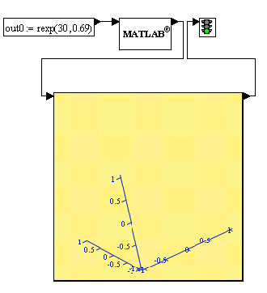

| титульный лист | постановка задачи | математическое решение | тестирование |
|---|---|---|---|
Реализация в MathConnex |
|||
Блок, реализованный в CKM MathCad:
out0:=rexp(30,0.69)
Блок, реализованный в CKM MatLab:
Betta = 0; Alfa=0;
A=0.1; L=pi;
T=4; N=30;
h=L/N; t=T/N;
x=zeros(N,N);
U=zeros(N,N);
Tt=zeros(N,N);
for i=1:N
for j=2:N
x(i,j)=x(i,j-1)+h;
Tt(i,j)=Tt(i,j-1)+t;
end
end
for j=1:N
U(1,j)=sin(x(1,j));
end
for i=2:N
for j=1:N
d(j)=-(h*h*U(i-1,j)+t*h^2*0);
end
d(1)=2*h*(Alfa+in0(i));
d(N)=2*h*Betta;
for k=1:N
for l=1:N
Q(k,l)= 0;
if k-l==1
Q(k,l)= A*t;
end
if (k==l)
Q(k,l)= -(2*A*t+h^2);
end
if k-l==-1
Q(k,l)= A*t;
end
end
end
Q(1,1)=-3;
Q(1,2)=4;
Q(1,3)=-1;
Q(N,N)=3;
Q(N,N-1)=-4;
Q(N,N-2)=1;
r=bicg(Q,d');
for l=1:N
U(i,l)=r(l);
end
end
out0=U;
Общая схема реализации в MathConnex: | |||
|  | |||